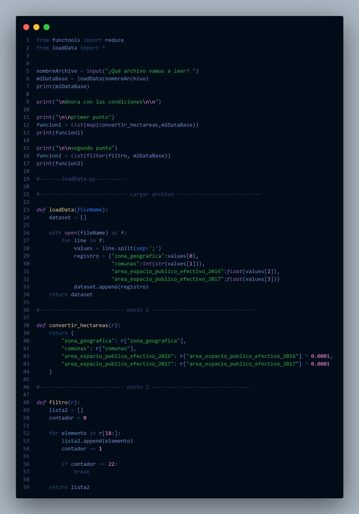

Mi nombre es Michell Andrea Castro Escobar, tengo 21 años, soy tecnologa en sistemas y
estudiante de 7 semestre en la carrera de ingeniería en sistemas, me gusta leer y los animales
Corte 1
Durante el primer corte de la materia de Lenguajes de Programación,
nos sumergimos en la introducción a la programación funcional utilizando
Python como herramienta principal. A lo largo de este periodo, participamos
en diversas actividades diseñadas para poner a prueba y demostrar los conocimientos
adquiridos. Estas actividades no solo consolidaron nuestra comprensión de los fundamentos
de la programación funcional, sino que también proporcionaron una oportunidad práctica para
aplicar los conceptos aprendidos durante el curso.
La programación funcional en Python se centra en tratar las funciones como objetos de primera
clase, permitiendo asignarlas a variables, pasarlas como argumentos y retornarlas como
resultados. Las funciones anónimas o lambda ofrecen concisión para operaciones simples.
Las funciones de orden superior facilitan la composición de funciones. Operaciones como map,
filter y reduce permiten manipular listas de manera funcional. Comprensiones de listas ofrecen
una sintaxis compacta. Se fomenta la programación inmutable para evitar cambios de estado,
y los decoradores proporcionan una elegante extensibilidad de funciones. Estos conceptos,
aunque Python no es un lenguaje puramente funcional, permiten adoptar prácticas funcionales
que pueden mejorar la claridad y mantenimiento del código.
Corte 2
En el segundo corte de la materia de Lenguajes de Programación, nos enfocamos en el
paradigma de programación orientada a objetos (OOP) con Python, centrándonos también
en la implementación de patrones de diseño. A lo largo de este periodo, participamos
activamente en diversas actividades destinadas a aplicar y demostrar los conocimientos
adquiridos en relación con la OOP y los patrones de diseño específicos de Python.
Estas actividades no solo nos permitieron explorar en profundidad los principios y
conceptos fundamentales de la programación orientada a objetos, sino que también nos
desafiaron a aplicar de manera práctica los patrones de diseño para resolver problemas
concretos.
La programación orientada a objetos (OOP) en Python es un enfoque que organiza el código
alrededor de "objetos", que son instancias de clases. Las clases actúan como plantillas
para definir atributos (datos) y métodos (funciones) que caracterizan a los objetos.
Por ejemplo, una clase "Perro" podría tener atributos como nombre y raza, así como métodos
como ladrar. Al crear instancias de estas clases, como "Fido" o "Buddy", se obtienen objetos
con características específicas. La OOP en Python se beneficia de conceptos como encapsulación
(ocultar detalles internos), herencia (compartir características entre clases) y polimorfismo
(múltiples clases respondiendo a un mismo método). Este enfoque permite estructurar el código
de manera más clara, facilitando la modelación de entidades del mundo real y promoviendo la
reutilización y mantenimiento del código.
Corte 3

Durante el tercer corte de la materia de Lenguajes de Programación, iniciamos la programación multihilo
con Java. A lo largo de este tiempo, participamos de manera activa en diversas actividades
destinadas a aplicar y demostrar los conocimientos adquiridos sobre la programación multihilo.
Nos adentramos en conceptos fundamentales como la concurrencia y la sincronización, enfrentándonos
a desafíos prácticos que exigían el uso eficiente de múltiples hilos en Java para resolver
problemas específicos. Estas actividades no solo ampliaron nuestra comprensión de la programación
concurrente, sino que también nos proporcionaron habilidades valiosas para abordar situaciones del
mundo real que requieren un enfoque multihilo en el desarrollo de software.
La programación multihilo en Java implica la ejecución simultánea de múltiples secuencias
de instrucciones, conocidas como hilos. En Java, puedes lograr esto implementando la interfaz
`Runnable` o extendiendo la clase `Thread`. Cada hilo ejecuta tareas de manera independiente,
lo que puede mejorar el rendimiento al aprovechar la capacidad de procesamiento de sistemas
con múltiples núcleos. Sin embargo, la programación multihilo también presenta desafíos, como
la necesidad de sincronizar y coordinar el acceso a recursos compartidos para evitar problemas
como condiciones de carrera. Java proporciona mecanismos como bloqueos y semáforos para
gestionar la concurrencia y garantizar la ejecución ordenada y segura de los hilos.